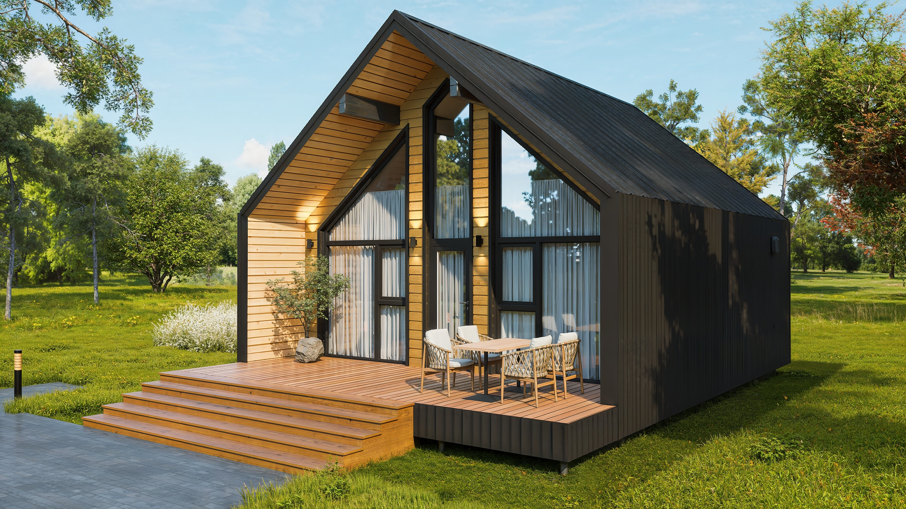
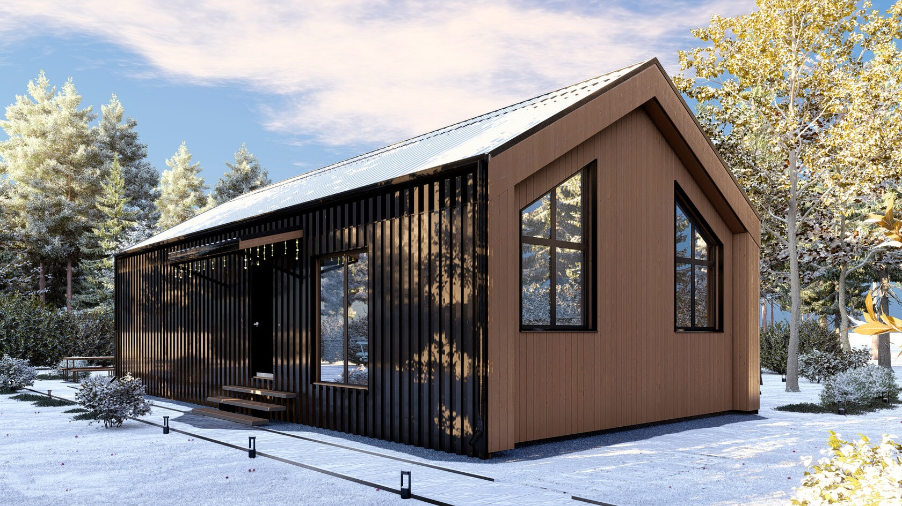

TatDomStroy · Казань
СИП-дома.
Для жизни за городом.
Строительство домов из СИП-панелей в Казани. Выберите архитектуру и обсудите планировку и комплектацию под свой участок.
Посмотреть домаПРИМЕРЫ РЕШЕНИЙ
Выберите архитектуру.
Обсудим ваш дом.
Барнхаус, дом с террасой или одноэтажная планировка. Посмотрите варианты, а состав работ и комплектацию обсудим отдельно.

Барнхаус
TatDomStroy · Казань
Барнхаус
Барнхаус, дом с террасой или одноэтажная планировка. Посмотрите варианты, а состав работ и комплектацию обсудим отдельно.
Обсудить строительство